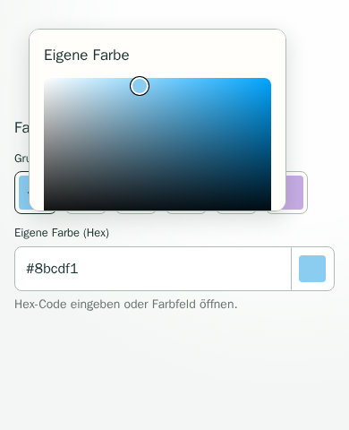
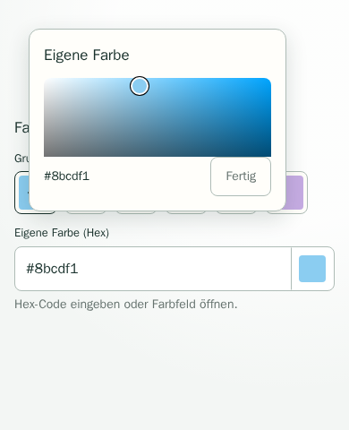

PHO-6 · Color picker confirmation
Playwright screenshots at 390 × 480 CSS pixels, Chromium mobile touch viewport. Before: the confirmation button is inside the clipped scroll region. After: the button stays in the fixed footer while the picker content scrolls independently.

